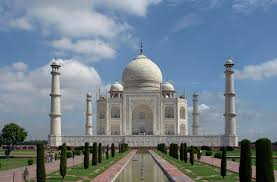

The battle of Panipat laid the foundation of the Mughal dynasty in Agra. The loss of the Afghan Ruler, Sikandar Lodhi became the turning point that piloted the nation’s forays into the world of architectural majesty. Globally renowned as the city of the Taj Mahal, this royal Mughal city has many other monuments too that emphasise the high point of Mughal architecture.
The founder of the Mughal dynasty, Babur, laid out the first formal Persian garden on the banks of the river Yamuna. Akbar raised the towering ramparts of the great Red Fort and within its walls Jahangir built rose-red palaces, courts and gardens.
However, the crowning glory of the city is obviously The Taj,a monument of an imagination turned into a "symbol of eternal love".The Taj represents India to the world embellished by Shah Jahan with marble mosques, palaces and pavilions of gem-inlaid white marble.
In 1631 AD, Shah Jahan, the Emperor during the Mughal Empire's period of greatest prosperity, was grief stricken when his third wife, Mumtaz Mahal died during the birth of their fourtheenth child, Gauhar Ara Begum. The court chronicles of ShahJahan's grief illustrate the love story traditionally held as an inspiration for the Taj Mahal.
The Taj Mahal incorporates and expands on design traditions of Persian architecture and earlier Mughal architecture. Specific inspiration came from successful Timurid and Mughal buildings including; the Gur-e Amir (the tomb of Timur, progenitor of the Mughal dynasty, in Samarkand), Humayun's Tomb and Shah Jahan's own Jama Masjid in Delhi.
While earlier Mughal buildings were primarily constructed of red sandstone, Shah Jahan promoted the use of white marble inlaid with semi-preciou stones and buildings under his patronage reached new levels of refinement.
The Itmad-Ud-Daulah's Tomb (sometimes called the Baby Taj ), that Nur Jahan built for her father, Mirza Ghiyas Beg was the first Mughal structure to be built entirely of marble. This particular monument marks the transition from the red sandstone structures to those in white marble and is believed to be the precursor of the magnificent Taj Mahal. However, the architects evolved this masterpiece from the closest model completed some 60 years before, at Humayun’s Tomb in Delhi, by his wife, Hamida Begum.
According to Koch, who spent a decade digging to the very beginnings of the famous monument and measuring every inch of the vast complex, this was exactly what the building-obsessed emperor had wanted to create: a monument that would be unrivalled in beauty and grandeur for all generations to come." It will," in the words of his court historian Muhammad Amin Qazwini, "be a masterpiece for ages to come, increasing the amazement of all humanity".
"As a historian I was a little sceptical about the love angle," confesses Koch. But his biography, Padshahnama, written by a series of carefully chosen historians, goes into extraordinary detail about the emperor's broken heart, including how his beard turned white overnight and how he shared with his begum not just passion but a meeting of minds as well.
Shah Jahan set about constructing his "masterpiece for ages to come", Koc says, with utmost deliberation. Just the selection of the site, for instance, took him nearly six months. The prevailing fashion in the royal capital Agra was for river front havelis to be turned into garden tombs. But the Taj wasn't going to be just one of the scores of garden tombs. "Shah Jahan knew & nothing makes an impression stronger than sheer size, so he decided to build a complex that was almost a kilometre long," Koch says. "It's the biggest mausoleum if not in the world, at least in Asia."
Twenty thousand people were deployed to work on it. The material was brought in from all over India and central Asia and it took a fleet of 1000 elephants
to transport it to the site. According to a court historian Abdul Hamid Lahori, a network of wells was laid down along the river line and was filled with
stones and other solid materials in order to lay a strong foundation of this grand mausoleum. The chief architect of Taj was a Persian named Ustad Isha Khan
(a well known architect of his time) who was assisted by other architects to make Taj Mahal a profound fusion of Persian, Turkish, Indian and Islamic architecture.
To make it most gorgeous architectural.
